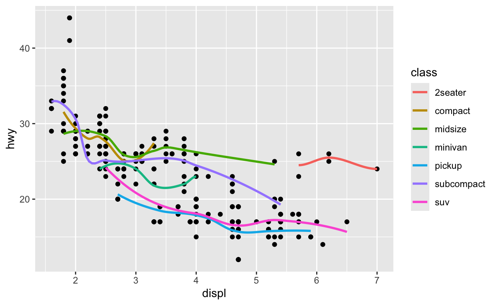

Welcome
A scatterplot displays the relationship between two continuous variables. Scatterplots are one of the most common types of graphs—in fact, you’ve met scatterplots already in Visualization Basics.
In this tutorial, you’ll learn how to:
- Make new types of scatterplots with
geom_text()andgeom_jitter() - Add multiple layers of geoms to a plot
- Enhance scatterplots with
geom_smooth(),geom_rug(), andgeom_repel() - Change the coordinate system of a plot
The tutorial is adapted from R for Data Science by Hadley Wickham and Garrett Grolemund, published by O’Reilly Media, Inc., 2016, ISBN: 9781491910399. You can purchase the book at shop.oreilly.com.
The tutorial uses the ggplot2, ggrepel, and dplyr packages, which have been pre-loaded for your convenience.
Scatterplots
Review 1 - geom_point()
In Visualization
Basics, you learned how to make a scatterplot with
geom_point().
The code below summarises the mpg data set and begins to plot the
results. Finish the plot with geom_point(). Put
mean_cty on the \(x\) axis
and mean_hwy on the \(y\)
axis.
mpg %>%
group_by(class) %>%
summarise(mean_cty = mean(cty), mean_hwy = mean(hwy)) %>%
ggplot()mpg %>%
group_by(class) %>%
summarise(mean_cty = mean(cty), mean_hwy = mean(hwy)) %>%
ggplot() +
geom_point(mapping = aes(x = mean_cty, y = mean_hwy))geom_text()
geom_text() and geom_label() create
scatterplots that use words instead of points to display data. Each
requires the extra aesthetic label, which you should map to
a variable that contains text to display for each observation.
Convert the plot below from geom_point() to
geom_text() and map the label aesthetic to the class
variable. When you are finished convert the code to
geom_label() and rerun the plot. Can you spot the
difference?
mpg %>%
group_by(class) %>%
summarise(mean_cty = mean(cty), mean_hwy = mean(hwy)) %>%
ggplot() +
geom_point(mapping = aes(x = mean_cty, y = mean_hwy))mpg %>%
group_by(class) %>%
summarise(mean_cty = mean(cty), mean_hwy = mean(hwy)) %>%
ggplot() +
geom_text(mapping = aes(x = mean_cty, y = mean_hwy, label = class))
mpg %>%
group_by(class) %>%
summarise(mean_cty = mean(cty), mean_hwy = mean(hwy)) %>%
ggplot() +
geom_label(mapping = aes(x = mean_cty, y = mean_hwy, label = class))geom_smooth()
In Visualization
Basics, you met geom_smooth(), which provides a
summarised version of a scatterplot.
geom_smooth() uses a model to fit a smoothed line to the
data and then visualizes the results. By default,
geom_smooth() fits a loess smooth to data sets with less
than 1,000 observations, and a generalized additive model to data sets
with more than 1,000 observations.
method
You can use the method parameter of
geom_smooth() to fit and display other types of model
lines. To do this, pass method the name of an R modeling
function for geom_smooth() to use, such as lm
(for linear models) or glm (for generalized linear
models).
In the code below, use geom_smooth() to draw the linear
model line that fits the data.
mpg %>%
group_by(class) %>%
summarise(mean_cty = mean(cty), mean_hwy = mean(hwy)) %>%
ggplot() mpg %>%
group_by(class) %>%
summarise(mean_cty = mean(cty), mean_hwy = mean(hwy)) %>%
ggplot() +
geom_smooth(mapping = aes(x = mean_cty, y = mean_hwy), method = lm)Layers
Add a layer
geom_smooth() becomes much more useful when you combine
it with geom_point() to create a scatterplot that contains
both:
- raw data
- a trend line
In ggplot2, you can add multiple geoms to a plot by adding multiple geom functions to the plot call. For example, the code below creates a plot that contains both points and a smooth line. Imagine what the results will look like in your head, and then run the code to see if you are right.
mpg %>%
group_by(class) %>%
summarise(mean_cty = mean(cty), mean_hwy = mean(hwy)) %>%
ggplot() +
geom_point(mapping = aes(x = mean_cty, y = mean_hwy)) +
geom_smooth(mapping = aes(x = mean_cty, y = mean_hwy), method = lm) geom_label_repel()
Do you remember how the labels that we made early overlapped each
other and ran off our graph? The geom_label_repel() geom
from the ggrepel package mitigates these problems by using an algorithm
to arrange labels within a plot. It works best in conjunction with a
layer of points that displays the true location of each observation.
Use geom_label_repel() to add a new layer to our plot
below. geom_label_repel() requires the same aesthetics as
geom_label(): x, y, and label (here set to class).
mpg %>%
group_by(class) %>%
summarise(mean_cty = mean(cty), mean_hwy = mean(hwy)) %>%
ggplot() +
geom_point(mapping = aes(x = mean_cty, y = mean_hwy)) +
geom_smooth(mapping = aes(x = mean_cty, y = mean_hwy), method = lm)mpg %>%
group_by(class) %>%
summarise(mean_cty = mean(cty), mean_hwy = mean(hwy)) %>%
ggplot() +
geom_point(mapping = aes(x = mean_cty, y = mean_hwy)) +
geom_smooth(mapping = aes(x = mean_cty, y = mean_hwy), method = lm) +
geom_label_repel(mapping = aes(x = mean_cty, y = mean_hwy, label = class))Code duplication
If you study the solution for the previous exercise, you’ll notice a fair amount of duplication. We set the same aesthetic mappings in three different places.
mpg %>%
group_by(class) %>%
summarise(mean_cty = mean(cty), mean_hwy = mean(hwy)) %>%
ggplot() +
geom_point(mapping = aes(x = mean_cty, y = mean_hwy)) +
geom_smooth(mapping = aes(x = mean_cty, y = mean_hwy), method = lm) +
geom_label_repel(mapping = aes(x = mean_cty, y = mean_hwy, label = class))You should try to avoid duplication whenever you can in code because duplicated code invites typos, is hard to update, and takes longer than needed to write. Thankfully, ggplot2 provides a way to avoid duplication across multiple layers.
ggplot() mappings
You can set aesthetic mappings in two places within any ggplot2 call.
You can set the mappings inside of a geom function, as we’ve been doing.
Or you can set the mappings inside of the ggplot() function
like below:
ggplot(data = mpg, mapping = aes(x = displ, y = hwy)) +
geom_point()
Global vs. Local mappings
ggplot2 will treat any mappings set in the ggplot()
function as global mappings. Each layer in the plot will
inherit and use these mappings.
ggplot2 will treat any mappings set in a geom function as local mappings. Only the local layer will use these mappings. The mappings will override the global mappings if the two conflict, or add to them if they do not.
This system creates an efficient way to write plot calls:
ggplot(data = mpg, mapping = aes(x = displ, y = hwy)) +
geom_point() +
geom_smooth(mapping = aes(color = class), se = FALSE)
Exercise 2
Reduce duplication in the code below by moving as many local mappings into the global mappings as possible. Rerun the new code to ensure that it creates the same plot.
mpg %>%
group_by(class) %>%
summarise(mean_cty = mean(cty), mean_hwy = mean(hwy)) %>%
ggplot() +
geom_point(mapping = aes(x = mean_cty, y = mean_hwy)) +
geom_smooth(mapping = aes(x = mean_cty, y = mean_hwy), method = lm) +
geom_label_repel(mapping = aes(x = mean_cty, y = mean_hwy, label = class))`geom_smooth()` using formula = 'y ~ x'mpg %>%
group_by(class) %>%
summarise(mean_cty = mean(cty), mean_hwy = mean(hwy)) %>%
ggplot(mapping = aes(x = mean_cty, y = mean_hwy)) +
geom_point() +
geom_smooth(method = lm) +
geom_label_repel(mapping = aes(label = class))Exercise 3 - Global vs. Local
Recreate the plot below in the most efficient way possible.
ggplot(data = mpg, mapping = aes(x = displ, y = hwy)) +
geom_point(mapping = aes(color = class)) +
geom_smooth()Global vs. Local data
The data argument also follows a global vs. local
system. If you set the data argument of a geom function,
the geom will use the data you supply instead of the data contained in
ggplot(). This is a convenient way to highlight groups of
points.
Use data arguments to recreate the plot below. I’ve
started the code for you.
mpg2 <- filter(mpg, class == "2seater")mpg2 <- filter(mpg, class == "2seater")
ggplot(data = mpg, mapping = aes(x = displ, y = hwy)) +
geom_point() +
geom_point(data = mpg2, color = "red", size = 2)Exercise 4 - Global vs. Local data
Use data arguments to recreate the plot below.

mpg3 <- filter(mpg, hwy > 40)
ggplot(data = mpg, mapping = aes(x = displ, y = hwy)) +
geom_point() +
geom_label_repel(data = mpg3, mapping = aes(label = class))last_plot()
When exploring data, you’ll often make a plot and then think of a way
to improve it. Instead of starting from scratch or copying and pasting
your code, you can use ggplot2’s last_plot() function.
last_plot() returns the most recent plot call, which makes
it easy to build up a plot one layer at a time.
ggplot(data = mpg, mapping = aes(x = displ, y = hwy)) +
geom_point()
last_plot() +
geom_smooth()last_plot() +
geom_smooth(method = lm, color = "purple")Saving plots
If you’d like to work with a plot later, you can save it to an R
object. Later you can display the plot or add to it, as if you were
using last_plot().
p <- ggplot(data = mpg) +
geom_point(mapping = aes(x = cty, y = hwy))Notice that ggplot2 will not display a plot when you save it. It waits until you call the saved object.
pgeom_rug()
geom_rug() adds another type of summary to a plot. It
uses displays the one dimensional marginal distributions of each
variable in the scatterplot. These appear as collections of tickmarks
along the \(x\) and \(y\) axes.
In the chunk below, use the faithful dataset to create a
scatterplot that has the waiting variable on the \(x\) axis and the eruptions
variable on the \(y\) axis. Use
geom_rug() to add a rug plot to the scatterplot. Like
geom_point(), geom_rug() requires x and y
aesthetic mappings.
ggplot(data = faithful, mapping = aes(x = waiting, y = eruptions)) +
geom_point() +
geom_rug()geom_jitter()
geom_jitter() plots a scatterplot and then adds a small
amount of random noise to each point in the plot. It is a shortcut for
adding a “jitter” position adjustment to a points plot (i.e,
geom_point(position = "jitter")).
Why would you use geom_jitter()? Jittering provides a
simple way to inspect patterns that occur in heavily gridded or
overlapping data. To see what I mean, replace geom_point()
with geom_jitter() in the plot below.
ggplot(data = mpg) +
geom_point(mapping = aes(x = class, y = hwy))ggplot(data = mpg) +
geom_jitter(mapping = aes(x = class, y = hwy))jitter and boxplots
geom_jitter() provides a convenient way to overlay raw
data on boxplots, which display summary information.
Use the chunk below to create a boxplot of the previous graph. Arrange for the outliers to have an alpha of 0, which will make them completely transparent. Then add a layer of points that are jittered in \(y\) direction, but not the \(x\) direction.
ggplot(data = mpg, mapping = aes(x = class, y = hwy)) +
geom_boxplot(outlier.alpha = 0) +
geom_jitter(width = 0)Coordinate Systems
coord_flip()
One way to customize a scatterplot is to plot it in a new coordinate
system. ggplot2 provides several helper functions that change the
coordinate system of a plot. You’ve already seen one of these in action
in the boxplots
tutorial: coord_flip() flips the \(x\) and \(y\) axes of a plot.
ggplot(data = mpg, mapping = aes(x = class, y = hwy)) +
geom_boxplot(outlier.alpha = 0) +
geom_jitter(width = 0) +
coord_flip()The coord functions
Altogether, ggplot2 comes with seven coord functions:
coord_cartesian()- (the default) Cartesian coordinatescoord_fixed()- Cartesian coordinates that maintain a fixed aspect ratio as the plot window is resizedcoord_flip()- Cartesian coordinates with x and y axes flippedcoord_map()andcoord_quickmap()- cartographic projections for plotting mapscoord_polar()- polar coordinatescoord_trans()- transformed Cartesian coordinates
By default, ggplot2 will draw a plot in Cartesian coordinates unless you add one of the functions above to the plot code.
coord_polar()
You use each coord function like you use coord_flip(),
by adding it to a ggplot2 call.
So for example, you could add coord_polar() to a plot to
make a graph that uses polar coordinates.
ggplot(data = diamonds) +
geom_bar(mapping = aes(x = cut, fill = cut), width = 1) last_plot() +
coord_polar()Coordinate systems and scatterplots
How can a coordinate system improve a scatterplot?
Consider, the scatterplot below. It shows a strong relationship between the carat size of a diamond and its price.

However, the relationship does not appear linear. It appears to have the form \(y = x^{n}\), a common relationship found in nature. You can estimate the \(n\) by replotting the data in a log-log plot.
log-log plots
Log-log plots graph the log of \(x\) vs. the log of \(y\), which has a valuable visual effect. If you log both sides of a relationship like
\[y = x^{n}\]
You get a linear relationship with slope \(n\):
\[log(y) = log(x^{n})\] \[log(y) = n \cdot log(x)\]
In other words, log-log plots unbend power relationships into straight lines. Moreover, they display \(n\) as the slope of the straight line, which is reasonably easy to estimate.
Try this by using the diamonds dataset to plot
log(carat) against log(price).
ggplot(data = diamonds) +
geom_point(mapping = aes(x = log(carat), y = log(price))) coord_trans()
coord_trans() provides a second way to do the same
transformation, or similar transformations.
To use coord_trans() give it an \(x\) and/or a \(y\) argument. Set each to the name of an R
function surrounded by quotation marks. coord_trans() will
use the function to transform the specified axis before plotting the raw
data.
ggplot(data = diamonds) +
geom_point(mapping = aes(x = carat, y = price)) +
coord_trans(x = "log", y = "log")Recap
Scatterplots are one of the most useful types of plots for data
science. You will have many chances to use geom_point(),
geom_smooth(), and geom_label_repel() in your
day to day work.
However, this tutor introduced important two concepts that apply to more than just scatterplots:
- You can add multiple layers to any plot that you make with ggplot2
- You can add a different coordinate system to any plot that you make with ggplot2